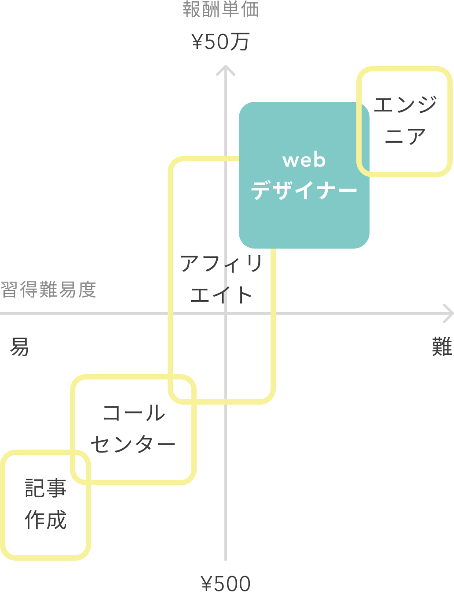
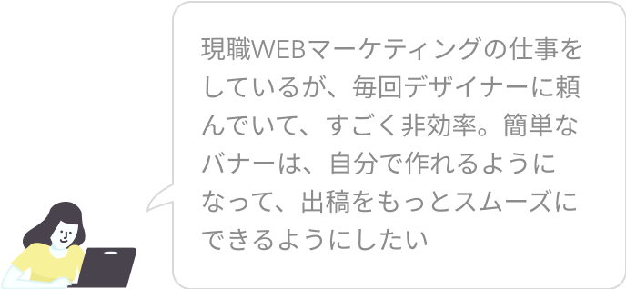
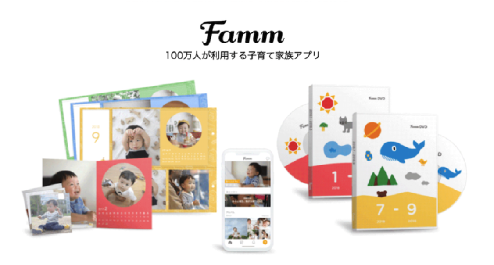

あと1日で終了！説明会参加でもれなく1,500円プレゼントキャンペーン中

※説明会ご参加者限定となります
※本キャンペーンは2023年8月1日-2023年8月3日の間に説明会をご予約された方限定のキャンペーンとなります
（予告なく早期終了する場合がございます）
受講料無料キャンペーン開催中！

本キャンペーンについては条件がございますので
「注意事項」もあわせてご確認ください。
TVCM放送
TVCMにて掲載されておりますギフト券のプレゼントキャンペーンは終了しております
女性向けWebデザインスクール調査で1位を獲得
スクールの主なメディア実績・リリース情報
2022.07.25 プレスリリース
経済産業省と独立行政法人情報処理推進機構（IPA）が運営するポータルサイト「マナビDX」に提供講座が掲載開始
2022.05.10 プレスリリース
ブランド初となるオフライン参加型イベント「Fammスクール オープンキャンパス」を二子玉川ライズで開催
2021.12.17 小学館ぎゅってweb様掲載
「育休中にスキルを身につけたい！Webデザイナースクールに通うママのタイムスケジュール」
メディア実績・リリース情報をもっと見る
2022.07.25 プレスリリース
Fammママ専用スクール、経済産業省と独立行政法人情報処理推進機構（IPA）が運営するポータルサイト「マナビDX」に提供講座が掲載開始
2022.05.10 プレスリリース
Fammママ専用スクールのブランドキャンペーン「そのこだわりが、しごとになる。」の第二弾として、ブランド初となるオフライン参加型イベント「Fammスクール オープンキャンパス」を二子玉川ライズで開催
2022.03.17 プレスリリース
「Fammママ専用スクール」とクリエイター向けポートフォリオ作成サービス「foriio」が提携し、子供がいる女性がより活躍できる環境づくりをサポート
2021.12.21 経済界web様掲載
「育休ママを支援する男性経営者が自ら育休取得して分かったこと」
2021.12.17 小学館ぎゅってweb様掲載
「育休中にスキルを身につけたい！Webデザイナースクールに通うママのタイムスケジュール」
2021.11.22 日経ビジネス電子版様掲載
「消えた復職の夢、ITスキルで身を立てる」
2021.7.19 プレスリリース
Fammを運営する株式会社Timersが戦略的パートナーシップ構築を目的にNTTグループ、マイナビ、朝日新聞グループ、名古屋テレビグループ各社から資金調達を実施
2021.7.19 プレスリリース
「女性不況 高まる学び直し 危機備え 技術と収入源複線化」
2021.4.9 SankeiBiz様掲載
「育休中も充実へ！ 自宅でスキルアップできるサービスが大人気」
2021.2.16 女子SPA!様掲載
「コロナで育休後に復帰できず…失業したママが、手に職をつけた方法
2020.12.3 日本経済新聞様掲載
「ママ、育休中も学べるか シッター付き講座も登場」
子育てママの仕事の悩み

このような悩みの声に応えたい想いから、在宅のスキマ時間でもしっかりと稼ぐことができる「ママWebデザイン講座」を2019年3月より提供しています。
在宅ワークなのに高単価！ママに人気のWebデザイナー
Webデザインのスキルを身に付けると高単価の在宅ワークに挑戦できます。
子供との時間を増やしたい、産休後のキャリアアップ、IT知識やスキルを身に付けたいママにおすすめです。

育児と仕事を両立しやすい在宅ワーク
WEBデザインはPCがあれば在宅や外出先でも働くことができ、納期のスケジュールも自分で調整することができるため育児と両立しやすいお仕事となっています。

LIVE配信＋無料のシッターサービスはFammスクールだけ
多くのWEBデザイナースクールでは、
- ・子供が預けられなかったり
- ・開催時間が夜や休日中心だったり
- ・参加者がママ以外の人であったり
というケースがほとんど。
ママが安心して教育を受けられる機会が極端に少ないのが現状です。
Fammは
- ・LIVE配信
- ・無料シッターサービス
を備えた唯一のまま専用Webデザインスクールとして、
在宅ワークで月10万円以上の収入をめざし、未経験からでも挫折せずにスキルを身に付けられる環境があります。
中カリキュラム
自宅で空き時間に
未経験から
実務レベルへ
少人数制クラス
対面授業と同等
以上の学びやすさ
ご一緒に
無料でシッターが
お預かりします
質問できる
受講期間だけでなく
卒業後半年間も
質問し放題
応用講座で
学び放題
デザイン、動画、
マーケなど
60スキル以上が無料
お仕事発注保証
卒業後のお仕事を
5件まで保証
毎月即満席の人気講座！卒業生は3,000人を突破
新型コロナウイルスによる影響で外出が難しい方、遠方にお住まいの方にも受講していただきたく、
無料シッターつきのLIVE配信講座を立ち上げてから毎月即満席となっています。

1ヶ月でWebデザインスキルを身に付けられる
Webデザインのお仕事をするために必要なバナー制作・ページ制作ができるようになります。

シッターがお子様をお預かりしますので、在宅で対面と同等の授業を安心して受けられます

FammのLIVE配信講座は「ママ専用ならでは」「Fammならでは」の以下の特徴を持っています。
- 1.家で子供と一緒に参加可能
- 2.未経験のママに手厚くケアできるよう、最大8名様までの少人数制
- 3.短期1ヶ月で完結、平日の午前中に実施
- 4.出られない日があっても安心、講義の内容を繰り返し視聴することができます
- 5.卒業後の受注実績作りまでサポート
- 6.卒業後も安心、100スキル以上の応用講座で学び放題
保育士資格や幼稚園や保育園での勤務経験のあるシッターを中心にシッターサービスを無料で提供させていただきます。

講義中や自宅学習でのサポートを十分にご提供するために、あえて最大8名までの少人数制クラスにしています。
参加者のママはほぼ全員が未経験者ですので、ご安心ください。

忙しいママ向けだからこそ、1か月の短期で身につくカリキュラム。ママにとって最も参加しやすい平日の午前中に開講します。
おうちでの受講なので、移動の心配もありません。

LIVE配信による講義の様子を、毎回録画もいたしますので、いつでも見返すことができます。
少人数制だからこその、講義前後での講師によるサポートも可能です。

講座の卒業後、Fammから実際の案件発注を5件まで保証しています。
継続的に仕事を得るために必要な「実績作り」を実現できます。
Fammスクールの過去の卒業生の中で、この発注をきっかけにして次の仕事につなげている方が多数いらっしゃいます。
（IT系への就職が決まった方も！）

WEBデザインに加え、Webマーケティング、動画など100スキル以上の応用講座を全て無料で提供しています。
また、卒業後も引き続き6ヶ月間は講師への質問回数に制限はありません。
日々の学習でつまずいた時はもちろん、実際にお仕事を進める中での相談・添削も可能です。


※上記は応用講座の一部であり、ご要望に応える形で随時新たな講座が追加されています。
現職や復職に向けてWebデザインの学習をしたい方にもおススメ
現職や復職に向けて育休中に学習をして、「より仕事で活躍したい」「仕事の領域を広げたい」という方にも、
1ヶ月の短期間で学べるのでオススメです。



人生を変えたママがたくさん！
講座で学べる内容
時間は全て10時〜13時、1回3時間の講義で無理なく学べます。
講義外でも、いつでも何度でも質問できます。
第1回：Adobe Photoshopでグラフィックを学ぶ
第2回：Webサイトの仕組み、HTMLを学ぶ①
第3回：HTMLを学ぶ②、CSSを学ぶ①
第4回：CSSを学ぶ②＋卒業演習発表
第5回：CSSを学ぶ③、FTP・CGIを学ぶ
※やむを得ぬ事情により、講義日程や内容が一部変更となる可能性がございます、あらかじめご承知ください
※講義ではデザインの作り方・考え方・実際の仕事で気をつけるべきことなども紹介します
※授業を一緒に受けるママ8名と講師が参加するオンライングループ内で講義以外でも宿題・課題の提出や講師からのフィードバック反映などを踏まえ
1ヶ月で45時間-60時間の学びを集中的に行っていただきます
講義後のアンケートに、95.4%の受講生が「満足」と答えてくださいました


※アンケート回答数：（2021年4〜7月に実施した過去スクール参加者へのアンケート調査より、N＝303）
しっかりしたサポートで、お客様の満足度と成長に向き合います

講義の度に満足度調査を実施。各コースの担当者
が満足度や習熟度の状況をみながら、短期集
中コースをフルに活かしていただくためのアド
バイス・サポートを行います。

短期のコースでは学習がストップしてしまうと
習熟度に大きな影響を与えます。授業や日々の
課題に関する質問には遅くとも1営業日後には回
答。参加者の学びのスピードを止めない体制で
サポートします。
NPS®(ネットプロモータースコア)と呼ばれる先
進的な顧客満足度の調査手法を取り入れ、シビ
アな視点で顧客体験のチェックを毎回行い、サ
ービス品質の向上に努めています。
講座日程について
月毎に開催：全5回、週に約1講義のペースで開催
- 講義時間：10時〜13時（※前後15分程度の余裕を見てくだい）
- 初回講座の約1週間前に自己紹介会を予定（30分程度）
→日程の詳細は説明会にてご案内（ご希望に沿った日程をご案内いたします）
講師紹介
伊藤 学（いとう まなぶ）
得意分野・デザイン（Web/印刷）
- プロデュース、ディレクション、プランナー
- カメラ撮影、動画撮影、HTML、CSS、Javascript、JQuery
- Dreamweaver、Photoshop、Illustrator、XD、Premiere など
経歴
-
1999年 都内インターネット専門学校に在籍しつつ、WEBサイト制作ユニット「STUDIO Freesia」を結成。
街のパソコン教室やWEB系派遣会社の登録者向け講師を担当。 -
2004年〜2006年 WEB制作会社にて、ディレクション・設計などを担当。
中小から大企業までのWEBサイト制作に携わるほか、WEB系専門誌の寄稿や企画を担当したり
Adobeオフィシャルトレーニングブック等を執筆。 -
2007年以降は再びフリーランスへ。WEBサイト企画・プロデュース・制作・運営をしつつ
デザイン専門学校、カルチャースクール、職業訓練学校などのWEBデザイン講師を担当。
宮崎 祐樹（みやざき ゆうき）
得意分野・デザイン（Web）
- Photoshop/Illustrator/Adobe XD
- HTML/CSS/Sass/Javascript/JQuery
- Wordpress/PHP
経歴
- 学生時代にフランスの大学に語学留学
- 帰国後、2008年より外資系企業でWEBデザイン、フロントエンド開発を担当
- 2017年よりフリーランスとして、WEBデザイナー兼フロントエンジニアとして活動
- 数社を渡り歩き、大規模なWEBサイトの制作・開発に携わる
- 現場で実際に手を動かす傍ら、デザインやコーディングのアドバイザーも務める
かわた まい（かわた まい）
得意分野・デザイン（Web/UI/ライティング）
- Photoshop・Illustrator・XD/HTML・CSS・JQuery・Wordpress
- ディレクション/取材・ライティング
経歴
- 大学卒業後、服飾雑貨メーカーにて企画/広報として、企画提案/プレリリース制作/Web・ECサイト運営
- 2012〜2015年 企業インハウスWebデザイナー
- 2016年 産休・育児休業
- 2017年〜 フリーランスとして活動中
川原 清隆（かわはら きよたか）
得意分野・デザイン（Web/印刷）
- Illustrator/HTML/CSS/Javascript/JQuery/レスポンシブル/wordpress/Premier
経歴
- 20代前半営業からパソコン教室の講師を経て25歳で企業。
- 30歳から育児を中心に据えフリーランスとして活動。
- 福岡の個人事業、小さな会社のホームページや各種デザインを中心に活動。
- 2018年11月よりストアカでWordPress中心のプライベートレッスンもはじめ、
1年で150人以上にレッスン。 - 2019年3月から動画編集事業もはじめYOUTUBEでの動画編集にも従事。
松尾 千鶴（まつお ちづる）
得意分野・デザイン（Web制作/サイト運用）
- Photoshop/Illustrator/HTML・CSS・Javascript・JQuery
- 運用サポート・アクセス解析・SEOライティング・運用改善企画提案
経歴
- KURU Designを運営し、大阪市と堺市でWeb制作を中心に活動。
- 理念「拡げるキッカケを共創する」を軸に、①自分の未来を切り開くスキル習得のサポート、
②自立してWebサイトを運用できるアシストを行う。
職歴
- IT会社でWebデザインやネットショップの運営→大手企業のインハウスでWebデザイナー
- 現在はフリーランスとして活動しながら、職業訓練所やウェブスクールにて講師
・企業のWeb運用アドバイザー顧問・ウェブ制作に従事
受講料について

オンラインスクールにおけるFammの立ち位置
他社様は「就職を前提としたコースや料金体系」になっているところがほとんどです。
Fammスクールは「ママが在宅で月に10万円以上を稼ぐことに特化」して本当に必要な内容を選び抜くことで低価格を実現しています。

*LIVE配信講座の場合はおうちにシッターが伺い、対面講座の場合はキッズスペースでお預かりします。
**卒業後、完全無料のオンラインコースで学ぶことができます。
無料説明会開催日程
ここではお伝えしきれないサービス内容の詳細説明や、気になる点・ご質問にお答えする電話説明会を実施いたします。
現在のご状況や今後の在宅ワーク・働き方の希望を踏まえたカウンセリングも合わせて実施いたします。
将来に関するご不安・モヤモヤに対する相談やアドバイスが欲しい！という目的でもぜひお気軽にご参加くださいませ。
※お子様とご一緒でも全く問題ございません。
※途中で電話を止めたりなどもできますので、お子様を最優先のうえ電話説明会ができますので、ご安心ください。
よくある質問
Q: 講座の全5回とはどのような頻度ですか
A：基本的には1週間に1回、1回の講座あたり3時間程度を想定しています。 (一部、週2回の日程がございます)
各講座ごとでどのようなことを学んでいただくかの詳細などは、説明会でもご説明させていただきます。
Q: 子供と一緒に参加しても大丈夫ですか
A: Timers社は子育て家族向けのアプリを運営している会社ですので、お気軽にお子様とご一緒にご参加ください。
また無料でご自宅にシッターサービスを提供しますので、ママさんにも安心して授業を受けていただくことが可能です。
※地域や日程が合わない場合は、費用を負担をしますので自己手配をお願い致します。
対面講座の場合にはキッズスペースもシッターも常駐しております、講義の教室からリアルタイムで、お子様の様子を見ることもできます。
Q: 説明会は無料ですか
A: 無料ですので、お気軽にご参加ください。説明を受け理解を深めて頂いた上で、その場でお申し込み頂くか、
ご検討のうえ後日申し込みかもお選び頂けます。
Q: 初心者・未経験者でも大丈夫ですか
A: 大丈夫です。本講座は、Webデザイン初心者・未経験の方向けを前提にした講座コースなので、安心してご参加ください。
Q: 未経験者でも講座受講後すぐに60万円稼げますか
A: 説明会でも詳細をご説明させていただいていますが、Fammママ専用スクールの1ヶ月のWebデザインコースの講座受講ですぐに月収60万円が超えることはありません。
講座受講後、在宅でのお仕事を受け始め、継続的に実績作り・スキルアップをされ、Webデザイナーとしての経験を重ねていく上で目指せる実現可能なケースだとご理解ください。
Web以外にも、多様な講座をご用意しています



Fammのママ用Webデザイナー講座を運営している株式会社
Timersは、100万人以上の会員を抱える子育て家族アプリ
Fammを運営している会社となります。子育てママの新しい
キャリアや多様な働き方を応援したいという想いから、
Fammの利用者や社内の子育てママの声をもとに、本講座を
スタートいたしました。